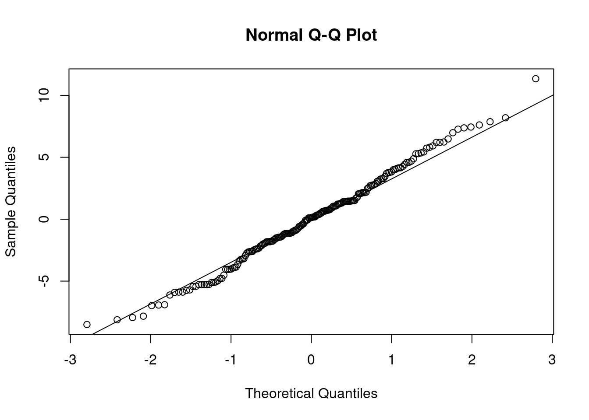
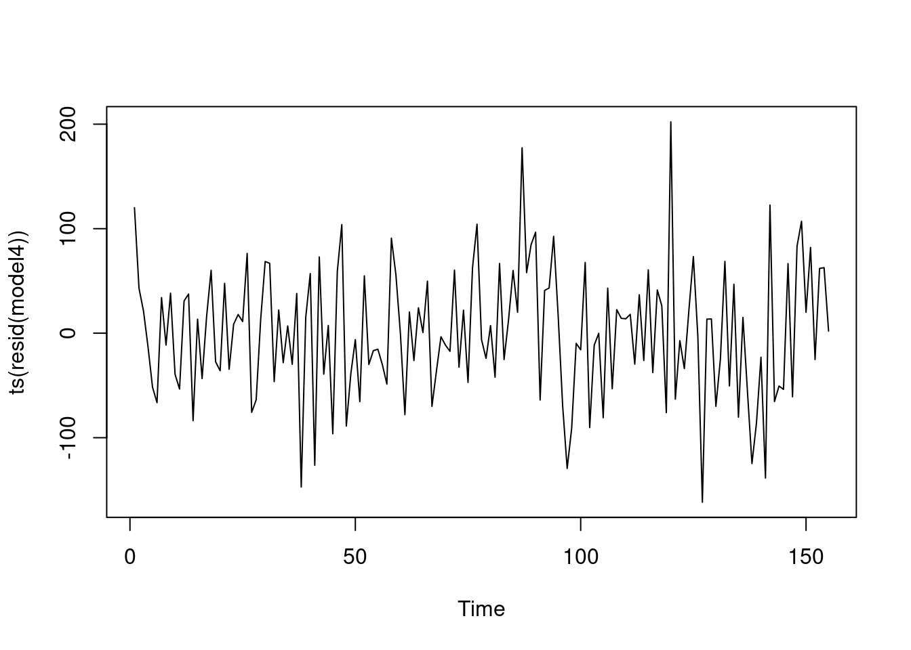

3 interactions
Partial slopes (change in y for each unit change in x, holding others constant) vs. marginal slopes (simple regression, only one x). Collinearity makes these values different…
For time series, the trigonometric dummies for seasonal strucure and those for calender effects tend to have no correlation with eachother. Also tend to have no correlation with the dummies of seasonality. So, time series presents an interesting case where partial slopes and marginal slopes are almost exactly the same.
If you have a model with seasonal structure with dummies, and a trend, you’ll get certain partial slopes for the seasonal structure. If you add trigonometric pairs for calendar effects, then the dummy variables for calendar effects are barely correalted with seasonal structure, so the variables don’t change that much when you introduce calendar effects.
Use a second regression to remove their influence on the previous X’s. Strip out of X1 the influence of the other X’s. So ,the partial slope of X1 is the same of the slope in simple regression. So, a partial slope is the effect AFTER you have taken into account the other x’s.
Each t test tests the influence of a single predictor beyond the other predictors. What does that x contribute to the model beyond the contributions of all the other X’s taken sequentially. A “last in” test. Same interpretation holds for a partial F test. This assess variables being tested beyond that.
3.1 Example
Simple regression. Sorted ~ Line. If one more line is added, the number of sorts/hour will increase by 1,4446. Other variables not inlcluded are free to vary.
\[ Sorts/Hour = 2,960 + 1,446Lines \]
Lines, sorters, and hours. Now, the interpretation of the partial slope (826)… is that if you add one more line, and hold fixed the number of sorts and truckers, you increase sorts/hours by 826. Don’t hire more workings, just add one more line. Borrow sorts and truckers from existing lines to form the new line. Partial and marginal slope are greatly different.
\[ Sorts/Hour = 739 + 826Lines + 95Sorters + 118Truckers \]
In time series, the partial slopes we saw prior to the variables added are different. The partial slopes will change as more variables are added.
3.1.1 Interaction
Example: salaries for account level 1. Let y be salary, \(x_1\) timeinposition, and \(x-2\) a dummy for gender (0 for males and 1 for females). Regress y on \(x_1\) for males only and a seperate regression for females. Examine two fitted lines, comparing their intercepts and their slopes. A difference in intercepts signals a difference in entry level salaries, and difference in slopes indicate difference rates of pay increase for two sexes. A difference in slopes signals interaction. That is, the relationship between y (salary) and one of the independent variables, \(x_1\), time in position, differs according to the value of the other independent variable, \(x_2\).
In this example, there is interaction if the relationship between salary and time in position differs according to the other x variable (gender).
Instead of fitting two lines seperately, pool the male and female data to estimate a common erro variables with more degrees of freedom than seperate regressions permit. Leads to more powerful tests, narrower confidence intervals and prediction intervals.
Why is the product the proper method to incorporate interaction? See:
\[ y = \beta_0 + \beta_1x_1 + \beta_2x_2 + \beta_sx_ax_2 + \epsilon \\ = \beta_0 + \beta_1timeinposition + \beta_2gender + \beta_3timeinposition*gender + \epsilon \]
For males this model is
\[ y = \beta_0+\beta_1timeinposition + \epsilon \]
For females this model is
\[ y = \beta_0+\beta_2 + (\beta_1+\beta_3)timeinposition + \epsilon \] For males, the intercept is \(\beta_0\) and the slope attached to timeinposition is \(\beta_1\). For females, these are the \(\beta_0 + \beta_2\) and \(\beta_1 +\beta_3\) respectively. If the paraemter \(\beta_3\) is present, then we say that there is interaction between timeinposition and gender. This means that the impact of timeinposition upon salary depends on gender.
This allows us to test whether the same or entry level salaries are same, and whether rates of pay increase are the same. If we test if entry level salaries are equal, then hyp = B2 = 0. If not, then females sig differently. For rate of pay increase, B1 is for males, but females if B1 + B3, so test whether B3 is equal to 0 or not in the alternative.
Interaction means that the relationship between ssalary and time in position, if interaction is present, then that relationship is sig. different for the two genders. That is the case when \(B_3\) is sig different from 0.
3.1.2 example
The baseline trend is when neither one of them is on duty. The interactions show when they are or are not on duty (add example)
3.1.3 Durbin-Watson statistic
Used to test the null of uncorrelated errors in a time series regression model, against the alternative that errors follow a first-order autoregression with positive lag one correlation
\[ y_ = \beta_0 + \beta_1x_{1t} + \beta_2x_{2t} + ...+ \beta_kx_{kt} + \epsilon_t \]
where the errors \(\epsilon_t\) follows a first-order autoregressive model
\[ \epsilon_t = \rho\epsilon_{t-1} + \alpha_t, -1 < \rho <1 \] \[ \epsilon_t = \rho\epsilon_{t-1} + \alpha_t, -1 < \rho <1 \]
Durbin-Watson tests the null \(H_0: \rho = 0\) against the alternatie that \(\rho\) is positive.
Calculated with Durbin-Watson statistic:
\[ DW = \frac{\sum_{t=2}^{n}(e_t - e_{t-1})^2}{\sum_{t=1}^{n}e_t^2} \]
and this is approximately equal to 2(1-r) where
\[ r = \frac{\sum_{t=2}^{n}e_te_{t-1}}{\sum_{t=1}^{n}e_t^2} \]
is the sample correlation between adjacent residuals and is an estimate of \(\rho\). The null is rejected if
\[ DW > d_t \]
3.2 Weekly Garbage Deposites
3.2.1 Simple model
with only a trend structure, dummy variables for two people, and dummy variables to estimate seasonal structure
Fundamental pair corresponds to a period of 365/7, which is 57 and 1/7. Takes 57 and 1/7 to span a week. Use 365.25 for leap year. The fundamental component has a period… the amount of time it takes to complete one cycle is. 52 1/7 weeks. First overtone inorporate j=t, then j=3, j=4… \[ y_t = \beta_0 + \beta_t + \beta_2t^2 + \beta_3t^3 + \beta_4M_t + \beta_5G_t + \beta_6MG_t + \sum_{j=1}^{4}(\gamma_jcos\frac{2\pi7jt}{365} + \delta_jsin\frac{2\pi7jt}{365}) + \epsilon_t \]
Dummy variables use the 0,1 convension, where M is 1 is Marlene on during week t, and 0 otherwise… MG for both Marleen and George on duty during week 1. ## Code
Purpose is to estimate how much stolen. The value attached to marlene suggests that the amount of shortage on the tonnage was 164.9, and for George, was 152.5. When two working together, we add these three, and the coefficient is positive, same order of magnitude. Some of the cosine/sin terms are sig…
From this week, we can get week by week losses in tonnage. Interpretation: in a week when Marlone alone working, the amount lost is 1.64… Add them up to get estimate of total amount of loss tonnage, and revenue…
Modestly significant lag 15 residual autocorrelaiton. Otherwise, the plot reveals no remaining autocorrelation. The next plots show the estimated seasonal and trend structures.
garbage <- read.csv("/cloud/project/data/Garbage (1).txt")
attach(garbage)
head(garbage)## date fiscalyr fee tonnage marlene george mg
## 1 123084 85 28.26 321.14 0 1 0
## 2 10685 85 28.26 319.75 0 0 0
## 3 11385 85 28.26 199.35 1 0 0
## 4 12085 85 28.26 151.59 1 0 0
## 5 12785 85 28.26 137.98 0 1 0
## 6 20385 85 28.26 106.76 0 1 0freq <- 14*pi/365
time <- as.numeric(1:length(tonnage))
time2 <- time*time; time3 <- time*time2
cosm <- matrix(nrow = length(tonnage), ncol = 8)
sinm <- matrix(nrow = length(tonnage), ncol = 8)
for (j in 1:8){
cosm[,j]<- cos(freq*j*time)
sinm[,j] <- sin(freq*j*time)
}
model1 <- lm(tonnage~time+time2+time3+marlene+george+mg+cosm[,1]+sinm[,1]+cosm[,2
]+sinm[,2]+cosm[,3]+sinm[,3]+cosm[,4]+sinm[,4]);summary(model1)##
## Call:
## lm(formula = tonnage ~ time + time2 + time3 + marlene + george +
## mg + cosm[, 1] + sinm[, 1] + cosm[, 2] + sinm[, 2] + cosm[,
## 3] + sinm[, 3] + cosm[, 4] + sinm[, 4])
##
## Residuals:
## Min 1Q Median 3Q Max
## -163.84 -43.74 -5.90 46.93 202.97
##
## Coefficients:
## Estimate Std. Error t value Pr(>|t|)
## (Intercept) 3.936e+02 2.925e+01 13.456 < 2e-16 ***
## time 6.567e-01 1.463e+00 0.449 0.654308
## time2 -2.851e-02 2.176e-02 -1.311 0.192157
## time3 1.753e-04 9.197e-05 1.906 0.058641 .
## marlene -1.649e+02 1.595e+01 -10.337 < 2e-16 ***
## george -1.525e+02 1.584e+01 -9.629 < 2e-16 ***
## mg 1.455e+02 4.147e+01 3.509 0.000606 ***
## cosm[, 1] -7.276e+00 8.179e+00 -0.890 0.375205
## sinm[, 1] -2.373e+01 9.201e+00 -2.579 0.010943 *
## cosm[, 2] -8.517e-01 8.164e+00 -0.104 0.917058
## sinm[, 2] -5.748e+01 8.422e+00 -6.824 2.46e-10 ***
## cosm[, 3] 9.862e+00 8.188e+00 1.204 0.230464
## sinm[, 3] -3.512e+01 8.245e+00 -4.260 3.73e-05 ***
## cosm[, 4] -2.748e+01 8.205e+00 -3.349 0.001041 **
## sinm[, 4] 4.516e+00 8.163e+00 0.553 0.581010
## ---
## Signif. codes: 0 '***' 0.001 '**' 0.01 '*' 0.05 '.' 0.1 ' ' 1
##
## Residual standard error: 71.33 on 140 degrees of freedom
## Multiple R-squared: 0.639, Adjusted R-squared: 0.6029
## F-statistic: 17.7 on 14 and 140 DF, p-value: < 2.2e-16No strong outliers. Not that much trending.. and don’t go to higher order polynomial. Minor heteroskedasticity. Volatility changes a bit.. Week 50 to week 80, it is common in terms of up and down motion. Modest amount of change in volatility.
ACF of residuals: have we reduced to white noise? Significant lag 15 correlation, but not very far… Model essentially reduces to white noise. No remaining autocorrelation structure.
resids <- resid(model1)
qqnorm(resids)
qqline(resids)
plot(ts(resids))
acf(ts(resids))
Estimate of the seasonal pattern. Sicne the data start at end of 84, there is a dip in collection at early Jan, then reach a peak in the spring, smaller peak in the summer. Then, big peak in the fall, and the peak in the fall is more substantial than in the spring. This is the static seasonal estimation, and static because we have the same pattern from one year to the next. We need 157 to have three complete years.
xmatrix<-
matrix(c(cosm[,1],sinm[,1],cosm[,2],sinm[,2],cosm[,3],sinm[,3],cosm[,4]
,sinm[,4]),ncol=8)
betaest<-coef(model1)[8:15]
plot(ts(xmatrix%*%betaest),xlab="Time",ylab="Seasonal",main="Estimated
Seasonal from Model 1") 
In next fit, model 2, we add four more overtone pairs to the seasonal component. Are these significant beyond the original four? Keep time cubed, and for the additional trig pairs, none are sig. R squared raised by about 3.25% from previous model.
model2<- lm(tonnage~time+time2+time3+marlene+george+mg+cosm[,1]+sinm[,1]+cosm[,
2]+sinm[,2]+cosm[,3]+sinm[,3]+cosm[,4]+sinm[,4]+cosm[,5]+sinm[,5]+cosm
[,6]+sinm[,6]+cosm[,7]+sinm[,7]+cosm[,8]+sinm[,8]);summary(model2) ##
## Call:
## lm(formula = tonnage ~ time + time2 + time3 + marlene + george +
## mg + cosm[, 1] + sinm[, 1] + cosm[, 2] + sinm[, 2] + cosm[,
## 3] + sinm[, 3] + cosm[, 4] + sinm[, 4] + cosm[, 5] + sinm[,
## 5] + cosm[, 6] + sinm[, 6] + cosm[, 7] + sinm[, 7] + cosm[,
## 8] + sinm[, 8])
##
## Residuals:
## Min 1Q Median 3Q Max
## -159.800 -44.346 -5.717 46.003 193.304
##
## Coefficients:
## Estimate Std. Error t value Pr(>|t|)
## (Intercept) 3.904e+02 2.892e+01 13.499 < 2e-16 ***
## time 8.096e-01 1.451e+00 0.558 0.577700
## time2 -3.007e-02 2.157e-02 -1.394 0.165651
## time3 1.798e-04 9.119e-05 1.972 0.050723 .
## marlene -1.669e+02 1.578e+01 -10.576 < 2e-16 ***
## george -1.533e+02 1.560e+01 -9.831 < 2e-16 ***
## mg 1.554e+02 4.132e+01 3.761 0.000254 ***
## cosm[, 1] -8.123e+00 8.027e+00 -1.012 0.313382
## sinm[, 1] -2.306e+01 9.057e+00 -2.546 0.012059 *
## cosm[, 2] -1.841e+00 8.014e+00 -0.230 0.818646
## sinm[, 2] -5.747e+01 8.270e+00 -6.949 1.52e-10 ***
## cosm[, 3] 8.664e+00 8.043e+00 1.077 0.283352
## sinm[, 3] -3.498e+01 8.091e+00 -4.323 3.01e-05 ***
## cosm[, 4] -2.870e+01 8.061e+00 -3.560 0.000516 ***
## sinm[, 4] 4.633e+00 8.009e+00 0.579 0.563898
## cosm[, 5] -1.277e+01 8.023e+00 -1.591 0.113912
## sinm[, 5] -5.617e+00 8.005e+00 -0.702 0.484070
## cosm[, 6] -1.055e+01 8.003e+00 -1.318 0.189744
## sinm[, 6] 6.238e+00 7.953e+00 0.784 0.434210
## cosm[, 7] -1.559e+01 8.022e+00 -1.943 0.054104 .
## sinm[, 7] 7.110e+00 7.952e+00 0.894 0.372864
## cosm[, 8] -9.858e+00 8.036e+00 -1.227 0.222149
## sinm[, 8] 1.298e+01 7.948e+00 1.634 0.104717
## ---
## Signif. codes: 0 '***' 0.001 '**' 0.01 '*' 0.05 '.' 0.1 ' ' 1
##
## Residual standard error: 69.96 on 132 degrees of freedom
## Multiple R-squared: 0.6726, Adjusted R-squared: 0.618
## F-statistic: 12.32 on 22 and 132 DF, p-value: < 2.2e-16Partial F test to compare model 1 and model 2. This tests the eight additional variables in the four additional cosine/sin pairs.
anova(model1, model2)## Analysis of Variance Table
##
## Model 1: tonnage ~ time + time2 + time3 + marlene + george + mg + cosm[,
## 1] + sinm[, 1] + cosm[, 2] + sinm[, 2] + cosm[, 3] + sinm[,
## 3] + cosm[, 4] + sinm[, 4]
## Model 2: tonnage ~ time + time2 + time3 + marlene + george + mg + cosm[,
## 1] + sinm[, 1] + cosm[, 2] + sinm[, 2] + cosm[, 3] + sinm[,
## 3] + cosm[, 4] + sinm[, 4] + cosm[, 5] + sinm[, 5] + cosm[,
## 6] + sinm[, 6] + cosm[, 7] + sinm[, 7] + cosm[, 8] + sinm[,
## 8]
## Res.Df RSS Df Sum of Sq F Pr(>F)
## 1 140 712345
## 2 132 646145 8 66200 1.6905 0.1063summary(model1)$r.squared## [1] 0.6390179summary(model2)$r.squared## [1] 0.672565Partial F stat calcualted with
\[ \frac{0.63902 -0.63902/8}{(1-0.63902)/(155-22-1)} \] The addition of the 4 trigonometric pairs gives this nuance.
xmatrix3<-
matrix(c(cosm[,1],sinm[,1],cosm[,2],sinm[,2],cosm[,3],sinm[,3],cosm[,4]
,sinm[,4],cosm[,5],sinm[,5],cosm[,6],sinm[,6],cosm[,7],sinm[,7],cosm[,8
],sinm[,8]),ncol=16)
betaest<-coef(model2)[8:23]
plot(ts(xmatrix3%*%betaest),xlab="Time",ylab="Seasonal",main="Estimated
Seasonal from Model 2") 
3.2.2 model 3
Back to 4 cosine sin pairs, but this is include interaction of M, G and the trend and MG.
In the weeks when marnele on duty, time:marlene is adjustment to time. The line time2:marlene is an adjustment to the value of time2. Likewise for George and MG. We get four different trends, a trend when neither of them is on duty, one when Marlene alone on duty, and one when George alone on duty.
These product terms allow us to get different estimated trends. One estimated trend for Marlene, and one for George, and one estimated for when neither was working, and four weeks when they were working together.
Rsquared slightly less than model 2. Product terms minimally sig. Partial F sig, so keep these significant terms
model3<- lm(tonnage~time+time2+time3+marlene+george+mg+cosm[,1]+sinm[,1]
+cosm[,2]+sinm[,2]+cosm[,3]+sinm[,3]+cosm[,4]+sinm[,4]+
marlene*time+marlene*time2+george*time+george*time2+mg*time+mg*time2)
summary(model3) ##
## Call:
## lm(formula = tonnage ~ time + time2 + time3 + marlene + george +
## mg + cosm[, 1] + sinm[, 1] + cosm[, 2] + sinm[, 2] + cosm[,
## 3] + sinm[, 3] + cosm[, 4] + sinm[, 4] + marlene * time +
## marlene * time2 + george * time + george * time2 + mg * time +
## mg * time2)
##
## Residuals:
## Min 1Q Median 3Q Max
## -165.393 -37.033 1.136 43.853 210.728
##
## Coefficients:
## Estimate Std. Error t value Pr(>|t|)
## (Intercept) 3.251e+02 4.589e+01 7.084 7.18e-11 ***
## time 2.583e+00 1.805e+00 1.431 0.15481
## time2 -3.712e-02 2.265e-02 -1.639 0.10355
## time3 1.611e-04 9.126e-05 1.766 0.07970 .
## marlene -9.766e+01 4.949e+01 -1.973 0.05052 .
## george -5.181e+01 4.954e+01 -1.046 0.29746
## mg 1.044e+03 5.181e+02 2.016 0.04581 *
## cosm[, 1] -4.710e+00 8.160e+00 -0.577 0.56481
## sinm[, 1] -2.563e+01 9.080e+00 -2.823 0.00548 **
## cosm[, 2] -3.089e+00 8.162e+00 -0.378 0.70572
## sinm[, 2] -5.918e+01 8.287e+00 -7.141 5.31e-11 ***
## cosm[, 3] 1.023e+01 8.076e+00 1.267 0.20728
## sinm[, 3] -3.180e+01 8.185e+00 -3.885 0.00016 ***
## cosm[, 4] -2.648e+01 8.100e+00 -3.269 0.00137 **
## sinm[, 4] 4.637e+00 8.063e+00 0.575 0.56617
## time:marlene -2.437e+00 1.408e+00 -1.731 0.08575 .
## time2:marlene 1.540e-02 8.499e-03 1.812 0.07229 .
## time:george -2.622e+00 1.420e+00 -1.847 0.06695 .
## time2:george 1.299e-02 8.625e-03 1.506 0.13437
## time:mg -3.524e+01 2.027e+01 -1.738 0.08443 .
## time2:mg 2.543e-01 1.477e-01 1.721 0.08749 .
## ---
## Signif. codes: 0 '***' 0.001 '**' 0.01 '*' 0.05 '.' 0.1 ' ' 1
##
## Residual standard error: 69.85 on 134 degrees of freedom
## Multiple R-squared: 0.6686, Adjusted R-squared: 0.6192
## F-statistic: 13.52 on 20 and 134 DF, p-value: < 2.2e-163.2.3 Estimated Trends (calculating the interaction terms)
$$ Neither:
325.082 + 2.5825t - 0.0371196t^2 + 0.00016114t^3 $$
3.2.4 Visualizing Three Trends
Black line, neither on duty, Blue trend is G, Red trend is Marlene. At the far left, Marlene usually stealing more than George. As time goes on, G stealing more. In the first few weeks, not a lot was being stolen. But at the end of two years, a lot more being stolen.
nmatrix<-matrix(c(rep(1,length(tonnage)),time,time2,time3),ncol=4)
nbeta<-c(325.082,2.5825,-0.0371196,0.00016114)
mbeta<-c(227.422,0.14524,-0.021722,0.00016114)
gbeta<-c(273.269,-0.03985,-0.024129,0.00016114)
plot(ts(nmatrix%*%nbeta),type="l",lty=1,lwd=2,col="black",ylim=c(0,500
),xlab="Time",ylab="Trend",main="Estimated Trends from Model 3")
lines(ts(nmatrix%*%mbeta),type="l",lty=2,lwd=2,col="red")
lines(ts(nmatrix%*%gbeta),type="l",lty=3,lwd=2,col="blue") 
plot(ts(resid(model3)))
acf(ts(resid(model3)))
Model extension of the second and third models, including eight trigonometric pairs and the interactions. Four additional cosine sin pairs for estimation of the seasonal pattern. Brings R squared to over 70%. The amount by which R squared goes up can be used to conduct the partial F test to see if sig.
model4<- lm(tonnage~time+time2+time3+marlene+george+mg+cosm[,1]+sinm[,1]+cosm[,
2]+sinm[,2]+cosm[,3]+sinm[,3]+cosm[,4]+sinm[,4]+cosm[,5]+sinm[,5]+cosm
[,6]+sinm[,6]+cosm[,7]+sinm[,7]+cosm[,8]+sinm[,8]+marlene*time+marlene
*time2+george*time+george*time2+mg*time+mg*time2);summary(model4) ##
## Call:
## lm(formula = tonnage ~ time + time2 + time3 + marlene + george +
## mg + cosm[, 1] + sinm[, 1] + cosm[, 2] + sinm[, 2] + cosm[,
## 3] + sinm[, 3] + cosm[, 4] + sinm[, 4] + cosm[, 5] + sinm[,
## 5] + cosm[, 6] + sinm[, 6] + cosm[, 7] + sinm[, 7] + cosm[,
## 8] + sinm[, 8] + marlene * time + marlene * time2 + george *
## time + george * time2 + mg * time + mg * time2)
##
## Residuals:
## Min 1Q Median 3Q Max
## -161.715 -40.721 0.693 43.050 202.251
##
## Coefficients:
## Estimate Std. Error t value Pr(>|t|)
## (Intercept) 3.214e+02 4.543e+01 7.075 9.18e-11 ***
## time 2.478e+00 1.787e+00 1.386 0.168165
## time2 -3.744e-02 2.242e-02 -1.670 0.097428 .
## time3 1.751e-04 9.036e-05 1.938 0.054883 .
## marlene -1.018e+02 4.932e+01 -2.063 0.041145 *
## george -5.130e+01 4.885e+01 -1.050 0.295639
## mg 1.122e+03 5.218e+02 2.149 0.033514 *
## cosm[, 1] -6.896e+00 8.031e+00 -0.859 0.392149
## sinm[, 1] -2.557e+01 8.932e+00 -2.863 0.004912 **
## cosm[, 2] -5.319e+00 8.029e+00 -0.663 0.508861
## sinm[, 2] -5.851e+01 8.132e+00 -7.195 4.93e-11 ***
## cosm[, 3] 8.395e+00 7.943e+00 1.057 0.292563
## sinm[, 3] -3.154e+01 8.036e+00 -3.925 0.000142 ***
## cosm[, 4] -2.853e+01 7.973e+00 -3.579 0.000491 ***
## sinm[, 4] 4.784e+00 7.908e+00 0.605 0.546281
## cosm[, 5] -1.395e+01 7.957e+00 -1.753 0.081997 .
## sinm[, 5] -5.315e+00 7.875e+00 -0.675 0.500986
## cosm[, 6] -1.035e+01 7.995e+00 -1.294 0.198057
## sinm[, 6] 5.763e+00 7.820e+00 0.737 0.462533
## cosm[, 7] -1.616e+01 8.054e+00 -2.006 0.046967 *
## sinm[, 7] 1.078e+01 7.889e+00 1.366 0.174256
## cosm[, 8] -6.667e+00 8.100e+00 -0.823 0.412025
## sinm[, 8] 1.351e+01 7.892e+00 1.712 0.089353 .
## time:marlene -1.870e+00 1.409e+00 -1.327 0.186946
## time2:marlene 1.044e-02 8.569e-03 1.219 0.225306
## time:george -2.216e+00 1.403e+00 -1.579 0.116765
## time2:george 9.076e-03 8.564e-03 1.060 0.291293
## time:mg -3.957e+01 2.043e+01 -1.936 0.055057 .
## time2:mg 2.945e-01 1.489e-01 1.977 0.050219 .
## ---
## Signif. codes: 0 '***' 0.001 '**' 0.01 '*' 0.05 '.' 0.1 ' ' 1
##
## Residual standard error: 68.47 on 126 degrees of freedom
## Multiple R-squared: 0.7007, Adjusted R-squared: 0.6342
## F-statistic: 10.53 on 28 and 126 DF, p-value: < 2.2e-16F test comparing model 4 and model 1
anova(model1, model4)## Analysis of Variance Table
##
## Model 1: tonnage ~ time + time2 + time3 + marlene + george + mg + cosm[,
## 1] + sinm[, 1] + cosm[, 2] + sinm[, 2] + cosm[, 3] + sinm[,
## 3] + cosm[, 4] + sinm[, 4]
## Model 2: tonnage ~ time + time2 + time3 + marlene + george + mg + cosm[,
## 1] + sinm[, 1] + cosm[, 2] + sinm[, 2] + cosm[, 3] + sinm[,
## 3] + cosm[, 4] + sinm[, 4] + cosm[, 5] + sinm[, 5] + cosm[,
## 6] + sinm[, 6] + cosm[, 7] + sinm[, 7] + cosm[, 8] + sinm[,
## 8] + marlene * time + marlene * time2 + george * time + george *
## time2 + mg * time + mg * time2
## Res.Df RSS Df Sum of Sq F Pr(>F)
## 1 140 712345
## 2 126 590640 14 121705 1.8545 0.03762 *
## ---
## Signif. codes: 0 '***' 0.001 '**' 0.01 '*' 0.05 '.' 0.1 ' ' 1plot(ts(resid(model4)))
Estimation of the lost tonnage and lost revenue, with a 95% confidence interval
xmatrixtons <- matrix(c(marlene, george,mg), ncol = 3)
betaesttons <- coef(model1)[5:7]
-sum(xmatrixtons%*%betaesttons)## [1] 19568.49xmatrixrev <- matrix(c(marlene*fee, george*fee, mg*fee), ncol = 3)
-sum(xmatrixrev%*%betaesttons)## [1] 611479.7r<-cbind(sum(marlene*fee),sum(george*fee),sum(mg*fee))
sdest<-sqrt(r%*%vcov(model1)[5:7,5:7]%*%t(r))
sdest ## [,1]
## [1,] 55363.1## confidence interval calculations
lcl <--sum(xmatrixrev%*%betaesttons)-1.96*sdest
ucl<--sum(xmatrixrev%*%betaesttons)+1.96*sdest